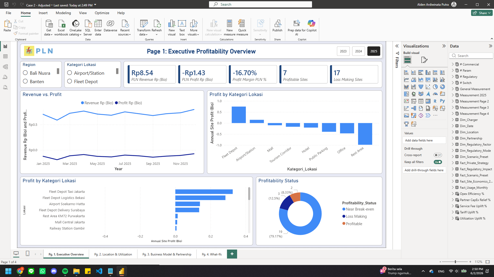
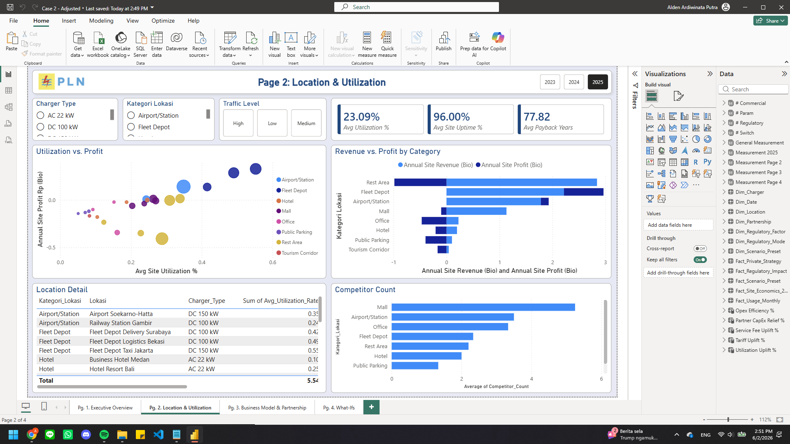
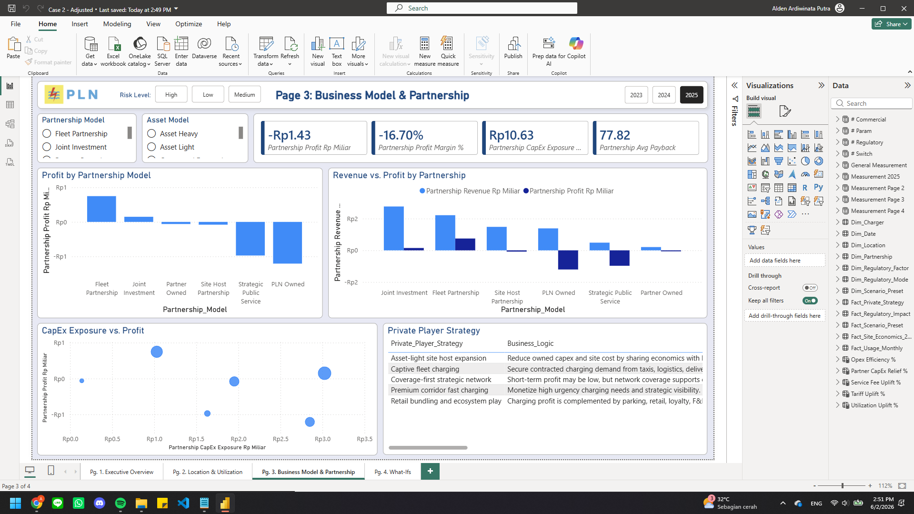
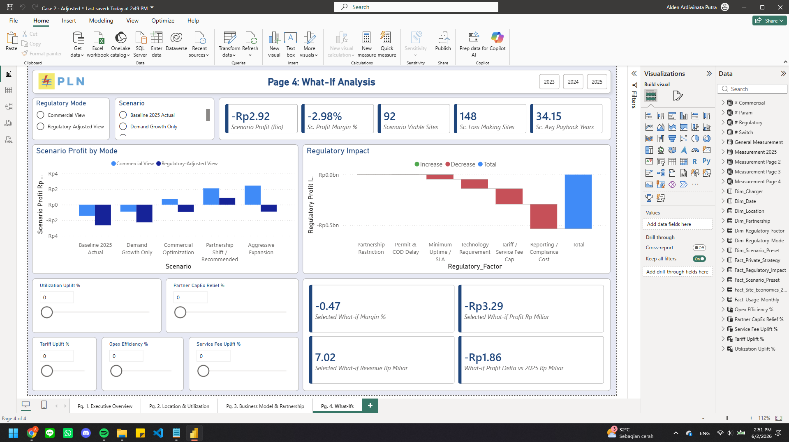

1. Latar Belakang Kasus
Pembangunan SPKLU dilakukan secara agresif untuk mendukung percepatan adopsi kendaraan listrik nasional. Namun, tingkat utilisasi SPKLU masih relatif rendah dan kontribusinya terhadap profitabilitas belum optimal.
Di saat yang sama, beberapa pemain swasta tetap melakukan ekspansi jaringan EV charger secara masif. Hal ini menimbulkan pertanyaan strategis: apakah ekspansi mereka didorong oleh profit charging fee langsung, model bisnis yang lebih ringan, captive demand, partnership, atau nilai ekosistem jangka panjang?
Peran Peserta
Anda berperan sebagai tim manajemen PLN yang diminta menyusun rekomendasi strategi SPKLU.
ProfitabilityLocation DiagnosisPartnershipRegulatory ConstraintWhat-if Parameter2. Cara Membaca Dashboard
| Page | Judul Final Dashboard | Pertanyaan Manajerial | Output Peserta |
|---|---|---|---|
| 1 | Executive Profitability Overview | Apakah SPKLU sudah profitable atau baru menghasilkan revenue? | Diagnosis awal profitabilitas portofolio. |
| 2 | Location & Utilization | Lokasi mana yang sehat, berisiko, atau hanya bersifat coverage? | Segmentasi lokasi dan karakteristik site yang layak diprioritaskan. |
| 3 | Business Model & Partnership | Model bisnis apa yang menjelaskan mengapa ekspansi bisa tetap menarik? | Rekomendasi partnership dan portfolio business model. |
| 4 | What-if Analysis | Strategi mana yang tetap layak setelah regulatory-adjusted view diperhitungkan? | Pilihan skenario dan asumsi parameter yang paling masuk akal. |
Page 1 — Executive Profitability Overview

Tujuan Page
Menentukan apakah isu SPKLU adalah masalah volume transaksi semata atau masalah portfolio profitability.
Visual yang Perlu Diamati
| Visual | Apa yang Dicari | Pertanyaan untuk Dijawab |
|---|---|---|
| KPI Revenue, Profit, Profit Margin | Perbandingan kontribusi pendapatan dan profitabilitas. | Apakah revenue yang ada sudah berubah menjadi profit? |
| KPI Profitable Sites dan Loss Making Sites | Berapa banyak site yang sudah sehat secara finansial. | Apakah masalah terjadi di mayoritas portofolio? |
| Revenue vs. Profit Trend | Pergerakan bulanan revenue dan profit. | Apakah revenue bergerak lebih baik daripada profit? |
| Profit by Kategori Lokasi | Kategori lokasi yang positif atau negatif. | Apakah semua lokasi ramai otomatis profitable? |
| Profit by Lokasi | Site terbaik dan terburuk. | Lokasi mana yang perlu dievaluasi lebih lanjut? |
| Profitability Status | Klasifikasi profitable, loss making, near break-even. | Apakah ada banyak lokasi yang dekat break-even dan bisa dioptimasi? |
Langkah Eksplorasi Peserta
- Mulai dari kondisi seluruh region dan seluruh kategori lokasi pada tahun 2025.
- Bandingkan kartu revenue dengan profit dan profit margin.
- Lihat apakah grafik revenue vs profit menunjukkan gap yang konsisten.
- Klik kategori lokasi yang profitnya positif, lalu bandingkan dengan kategori yang negatif.
- Gunakan bar chart lokasi untuk menemukan site yang paling sehat dan paling bermasalah.
Catatan Peserta
Page 2 — Location & Utilization

Tujuan Page
Mendiagnosis apakah lokasi dengan utilisasi atau traffic lebih tinggi benar-benar menghasilkan profit yang lebih baik.
Visual yang Perlu Diamati
| Visual | Apa yang Dicari | Implikasi Analisis |
|---|---|---|
| Avg Utilization, Avg Uptime, Avg Payback | Indikator kesehatan operasional dan investasi. | Utilisasi dan uptime tinggi belum cukup jika payback terlalu panjang. |
| Utilization vs. Profit Scatter | Site dengan utilisasi tinggi tetapi profit rendah, atau utilisasi sedang tetapi profit positif. | Membedakan demand issue dan cost structure issue. |
| Revenue vs. Profit by Category | Kategori yang revenue-nya besar tetapi profitnya lemah. | Traffic tinggi belum tentu margin tinggi. |
| Location Detail Table | Lokasi, charger type, utilization, profit, dan payback. | Menentukan site yang perlu expand, optimize, partner, atau hold. |
| Competitor Count | Intensitas kehadiran kompetitor per kategori lokasi. | Menilai apakah pemain swasta mengejar lokasi tertentu karena traffic, ecosystem, atau partnership. |
Langkah Eksplorasi Peserta
- Amati nilai rata-rata utilization, uptime, dan payback pada kondisi seluruh lokasi.
- Lihat scatter plot: temukan cluster lokasi yang profit positif dan negatif.
- Klik kategori Fleet Depot dan amati pola utilization/profit.
- Klik kategori Rest Area dan bandingkan revenue terhadap profit.
- Cek detail lokasi yang paling ekstrem: site profit tertinggi dan site loss terbesar.
- Bandingkan dengan competitor count untuk melihat kategori yang menarik bagi pemain swasta.
Catatan Peserta
Page 3 — Business Model & Partnership

Tujuan Page
Mengidentifikasi model bisnis yang membuat ekspansi SPKLU lebih layak, terutama ketika utilisasi pasar belum matang.
Visual yang Perlu Diamati
| Visual | Apa yang Dicari | Implikasi Analisis |
|---|---|---|
| Partnership Profit, Margin, CapEx Exposure, Avg Payback | Apakah model bisnis saat ini terlalu asset heavy. | Profitabilitas harus dibaca bersama capital exposure. |
| Profit by Partnership Model | Model kerja sama yang positif atau negatif. | PLN Owned belum tentu paling baik walaupun revenue share tinggi. |
| Revenue vs. Profit by Partnership | Model dengan revenue tinggi tetapi profit rendah. | Revenue share besar dapat tertutup oleh biaya dan capex. |
| CapEx Exposure vs. Profit | Trade-off asset heavy vs asset light. | Strategi swasta sering menekan risiko investasi langsung. |
| Private Player Strategy | Logika ekspansi swasta: asset-light, captive fleet, premium corridor, retail bundling. | Menarik lesson untuk strategi PLN. |
Langkah Eksplorasi Peserta
- Bandingkan profit antar partnership model.
- Klik PLN Owned dan amati revenue, profit, capex exposure, serta payback.
- Klik Fleet Partnership dan bandingkan dengan PLN Owned.
- Amati scatter CapEx Exposure vs Profit untuk melihat model yang lebih asset-light.
- Baca tabel Private Player Strategy dan tentukan lesson yang relevan untuk PLN.
Catatan Peserta
Page 4 — What-if Analysis

Tujuan Page
Menguji apakah strategi yang tampak menarik secara komersial tetap layak setelah regulatory-adjusted view dihitung.
Visual dan Parameter yang Perlu Diamati
| Elemen | Fungsi | Pertanyaan Peserta |
|---|---|---|
| Regulatory Mode | Membandingkan Commercial View dan Regulatory-Adjusted View. | Apakah keputusan masih menarik setelah regulatory constraint masuk? |
| Scenario | Memilih Baseline, Demand Growth, Commercial Optimization, Partnership Shift, atau Aggressive Expansion. | Skenario mana yang paling realistis? |
| Scenario Profit by Mode | Membandingkan profit antar skenario dan mode. | Apakah skenario paling agresif tetap terbaik? |
| Regulatory Impact Waterfall | Memecah dampak regulasi terhadap profit. | Faktor regulasi mana yang paling menggerus hasil? |
| What-if Parameters | Utilization uplift, tariff uplift, service fee uplift, opex efficiency, partner capex relief. | Asumsi mana yang paling sensitif terhadap profit? |
Langkah Eksplorasi Peserta
- Mulai dengan Baseline 2025 Actual, lalu bandingkan Commercial View dan Regulatory-Adjusted View.
- Pilih Commercial Optimization untuk melihat apakah strategi komersial murni cukup memperbaiki profit.
- Ganti ke Regulatory-Adjusted View dan amati perubahan profit/margin.
- Pilih Aggressive Expansion lalu bandingkan hasilnya sebelum dan sesudah regulasi.
- Pilih Partnership Shift / Recommended dan nilai apakah skenario ini tetap viable setelah regulasi.
- Gunakan slider parameter secara bertahap untuk menguji sensitivitas asumsi, bukan mengubah semua parameter sekaligus.
Catatan Peserta
Template Jawaban Akhir Peserta
| Komponen | Isi Jawaban Anda |
|---|---|
| Diagnosis utama | |
| Lokasi/kategori prioritas | |
| Model bisnis yang direkomendasikan | |
| Skenario what-if | |
| Risiko dan asumsi |